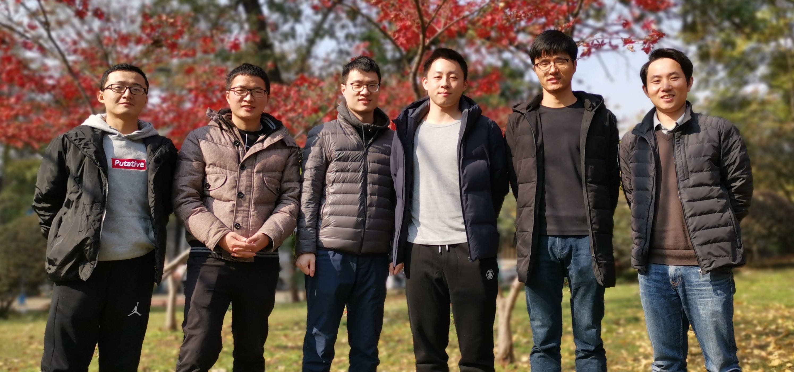

Overview
Welcome to our website!
I lead the volcano and earthquake research group (火山与地震研究实验室) in the department of Geomatics at Central South University (中南大学). Our research primarily focuses on the use of space geodesy to study ground deformation associated with a variety of geophysical and anthropogenic processes. We are especially interested in the study of earthquake cycle deformation, volcanoes, land subsidence and atmosphere.
Seeking postdoctoral researchers, click here for details.

(The Volcano & Earthquake Research Laboratory in Dec 2019)
(The Volcano & Earthquake Research Laboratory in Dec 2019)
News
2019
- Eslam has published a paper in ISPRS on sandune movements in Saini, https://doi.org/10.1016/j.isprsjprs.2020.04.004.
- Xiaoge Liu has a paper out in JGR on Co- and postseismic slip inversion, https://doi.org/10.1029/2019JB017953.
- Check out our newly development coseismic deformation generation system for rapid hazard evaluations: www.insar.com.cn.
- Shuai Wang has a paper in GRL on shallow earthquakes in Australia, https://doi.org/10.1029/2018GL080510.
- Dr. Wenbin Xu has a new paper out in Nature Communications, https://www.nature.com/articles/s41467-019-09125-w.
- Lei Xie, a master student from U. Calglary, joined our group as one of PhD students this fall